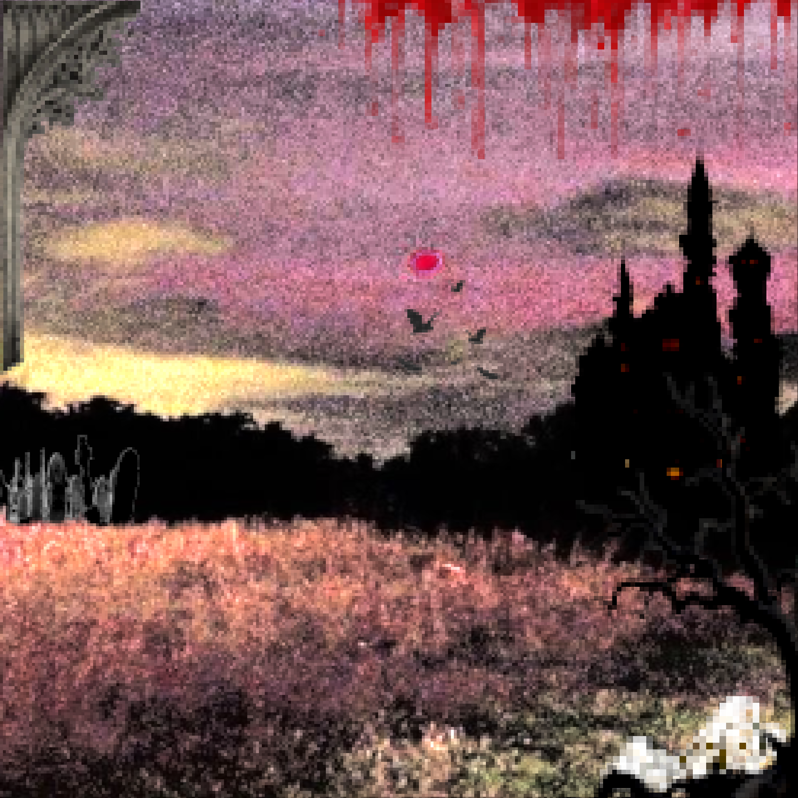
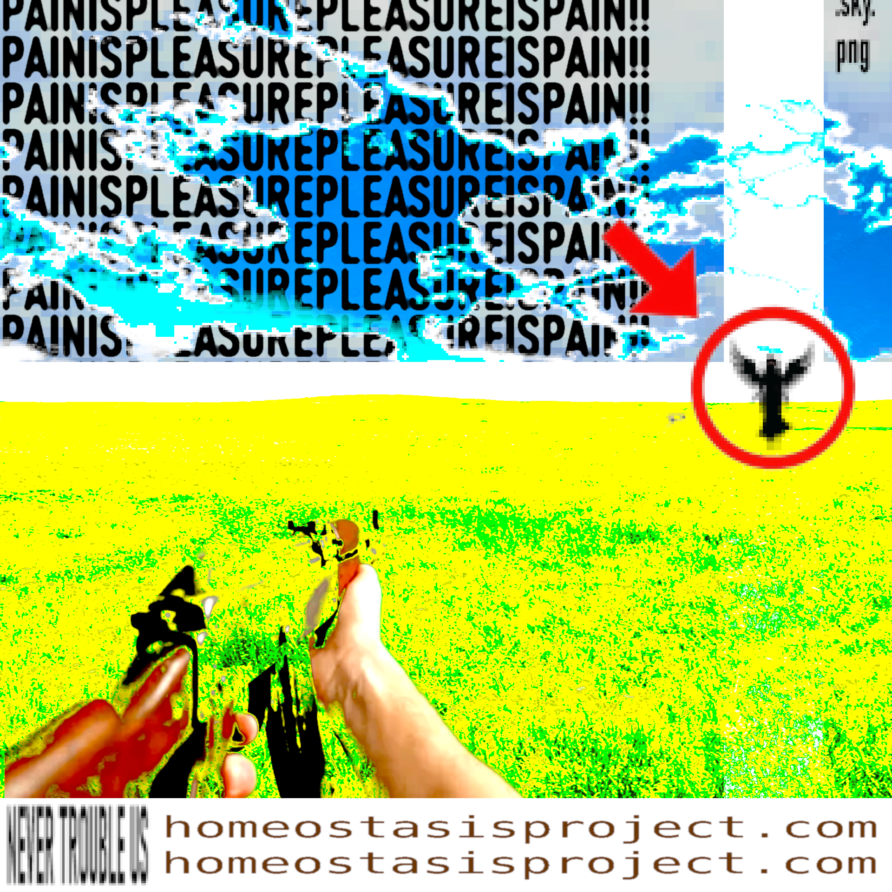
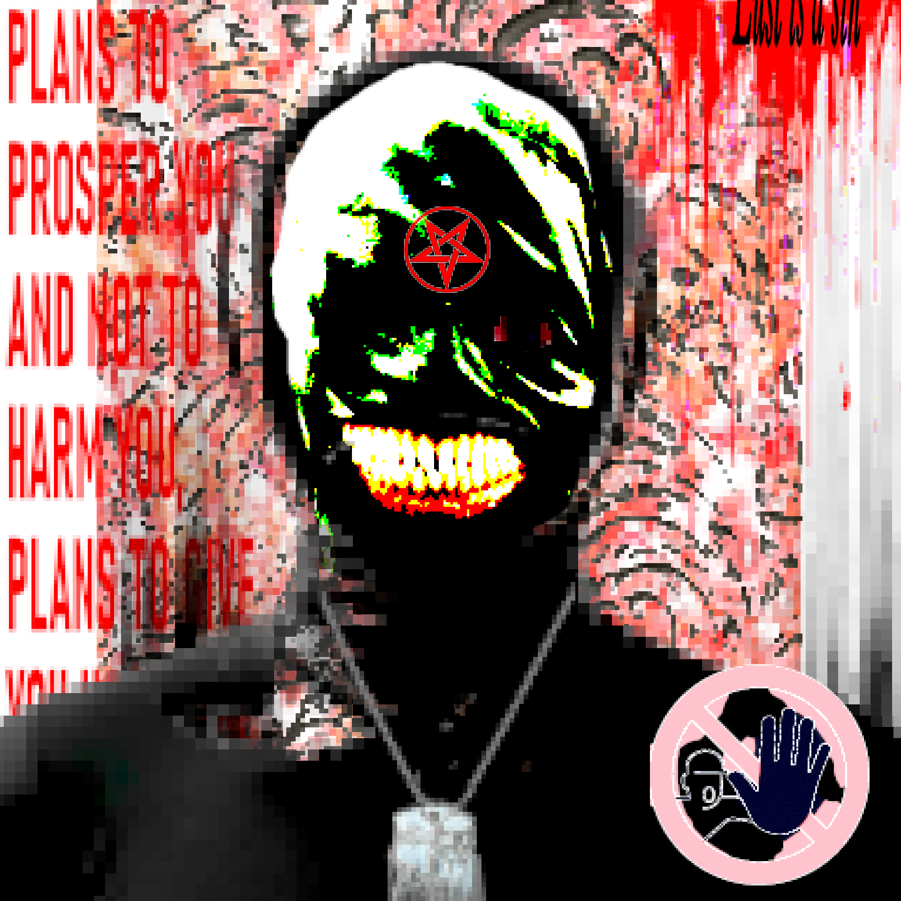
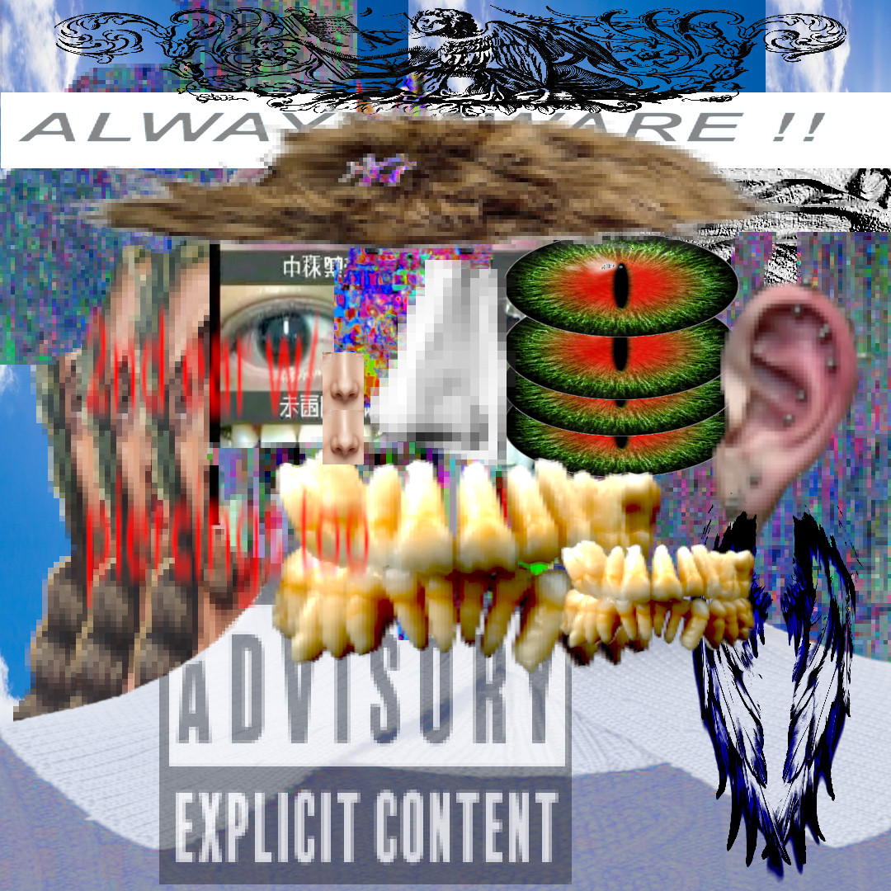

```html
<!DOCTYPE html>
<html lang="fr">

<head>
  <meta charset="UTF-8">
  <link rel="stylesheet" href="page3.css">

  <script>
    // 1 chance sur 10 d'avoir l'image p6.png en fond
    window.addEventListener("DOMContentLoaded", () => {
      const roll = Math.floor(Math.random() * 5) + 1;

      if (roll === 1) {
        document.body.classList.add("bg-image");
      }
    });
  </script>

</head>

<body>

  <div class="gallery">

    <div class="column">

      

      

      

      <video autoplay muted loop playsinline controls
             onclick="openLightbox('images/w9.mp4','video')">
        <source src="images/w9.mp4" type="video/mp4">
      </video>

      <video autoplay muted loop playsinline controls
             onclick="openLightbox('images/w7.mp4','video')">
        <source src="images/w7.mp4" type="video/mp4">
      </video>

      <video autoplay muted loop playsinline controls
             onclick="openLightbox('images/w5.mp4','video')">
        <source src="images/w5.mp4" type="video/mp4">
      </video>

      

      <video autoplay muted loop playsinline controls
             onclick="openLightbox('images/w1.mp4','video')">
        <source src="images/w1.mp4" type="video/mp4">
      </video>

    </div>

    <div class="column">

      <video autoplay muted loop playsinline controls
             onclick="openLightbox('images/w16.mp4','video')">
        <source src="images/w16.mp4" type="video/mp4">
      </video>

      

      

      

      <video autoplay muted loop playsinline controls
             onclick="openLightbox('images/w8.mp4','video')">
        <source src="images/w8.mp4" type="video/mp4">
      </video>

      <video autoplay muted loop playsinline controls
             onclick="openLightbox('images/w6.mp4','video')">
        <source src="images/w6.mp4" type="video/mp4">
      </video>

      <video autoplay muted loop playsinline controls
             onclick="openLightbox('images/w4.mp4','video')">
        <source src="images/w4.mp4" type="video/mp4">
      </video>

      

    </div>

  </div>

  <a href="index.html" class="back-home">← GO HOME??</a>

  <div id="lightbox" class="lightbox" onclick="closeLightbox()">

    

    <video id="lightbox-video"
           controls
           autoplay
           style="display:none;">
    </video>

  </div>

  <script>

    function openLightbox(src, type) {

      const lightbox = document.getElementById("lightbox");
      const img = document.getElementById("lightbox-img");
      const video = document.getElementById("lightbox-video");

      lightbox.style.display = "flex";

      if (type === "video") {

        img.style.display = "none";

        video.style.display = "block";
        video.src = src;
        video.play();

      } else {

        video.pause();
        video.style.display = "none";

        img.style.display = "block";
        img.src = src;
      }
    }

    function closeLightbox() {
      document.getElementById("lightbox").style.display = "none";
      document.getElementById("lightbox-video").pause();
    }

  </script>

</body>

</html>
```

J'ai uniquement inversé l'ordre des médias dans chaque colonne, sans modifier le reste du code.
